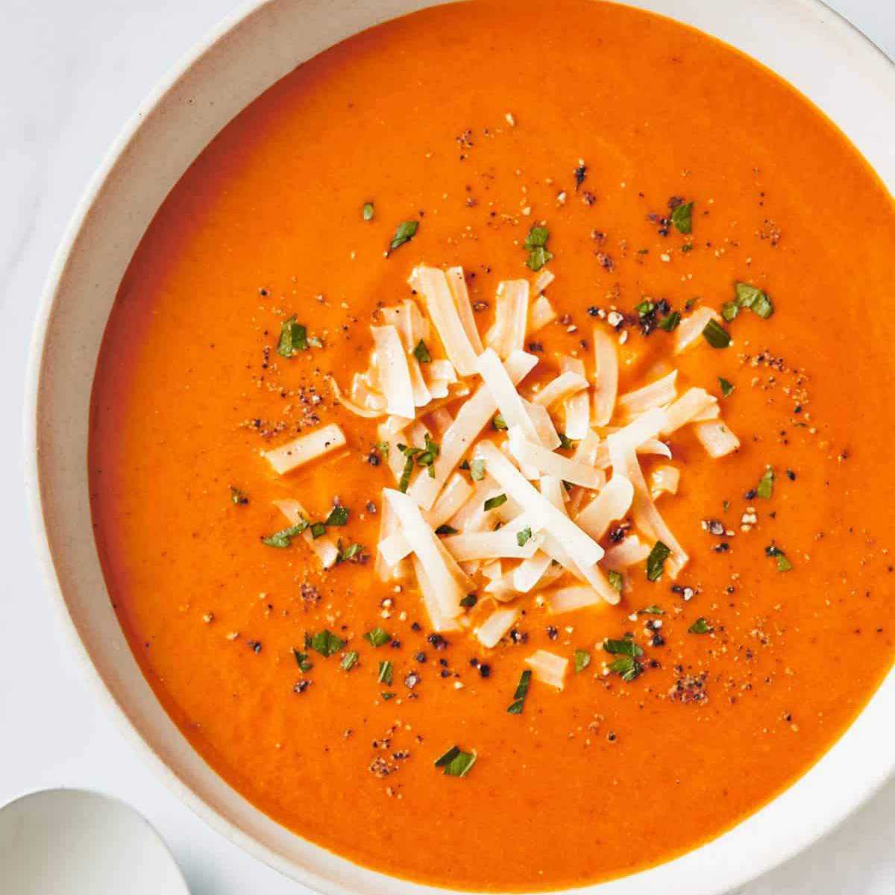

Tomato Soup Recipe

Below you will find the recipe for tomato soup
Tomato soup is a soup with tomatoes as the primary ingredient. It can be served hot or cold, and may be made in a variety of ways. It may be smooth in texture, and there are also recipes that include chunks of tomato, cream, chicken or vegetable stock, vermicelli, chunks of other vegetables and meatballs
Ingredients
- 1 pound sweet Italian sausage
- 1 kilo tomatoes
- 250 ml milk
- 1 teaspoon pepper
- 1 teaspoon salt
Steps
- Add the sausage to a pan and heat for a few minutes
- In a blender, add tomatoes and milk, blend till silky smooth
- Add the blend to a casserole and heat up
- When heated add the sausages and salt
- Serve with some foccacia bread and enjoy